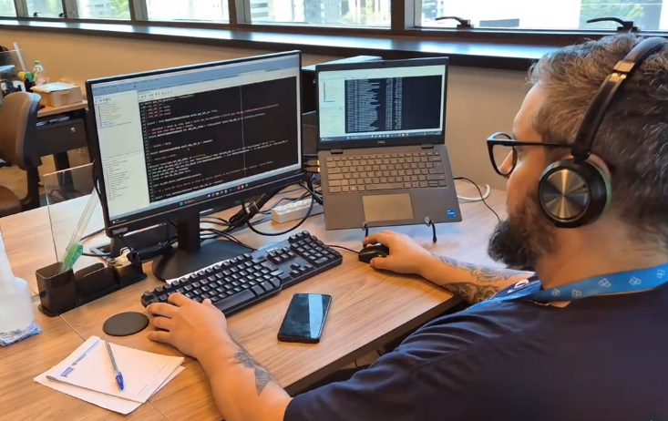

Mid-Level Systems Analyst
Aug 2023 – Present | Porto Alegre, Brazil

Critical Data Analysis
Development of complex SQL logic for plan auditing and ensuring the integrity of pension contributions.
Impact & Results
Funcorsan Core Responsibilities
ERP Management
Maintenance of core Private Pension systems, ensuring the integrity of complex business rules and pension calculations.
Oracle SQL Expert
Advanced use of SQL Developer for query development and performance tuning aimed at report extraction and data governance.
Cloud Migration
Technical support in migrating on-premise systems to a private cloud, focusing on architecture planning, security, and operational continuity.
Troubleshooting
Diagnostic of critical technical failures, significantly reducing system downtime through agile and precise fixes.
Process Improvement
Automation of manual routines and mitigation of human error risks within operational workflows.
View Next Experience
Hardlink - Inside Sales